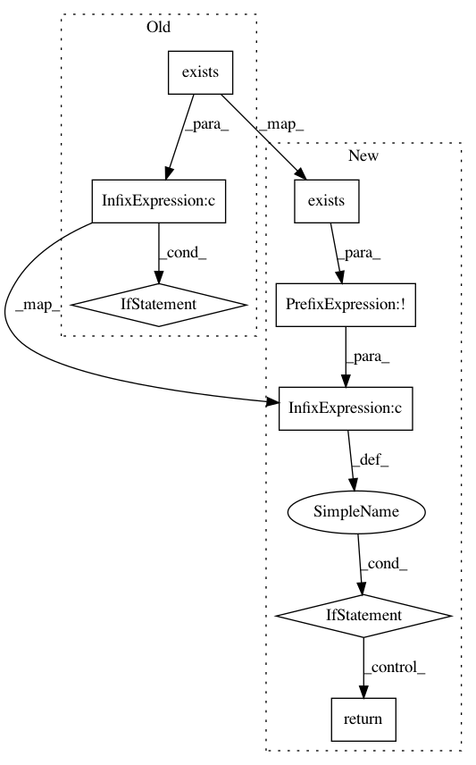

a1af2977c50399f58726182cd9481a6770c115ac,sos/sos_task.py,,check_task,#Any#,224
Before Change
res = pickle.load(result)
if res["succ"] == 0:
if isinstance(res["output"], dict):
if all(FileTarget(x).exists() and FileTarget(x).signature() == y for x,y in res["output"].items()):
if new_res:
return "completed"
else:
return "completed-old"
else:
env.logger.debug("{} not found or signature mismatch".format(res["output"]))
if new_res:
return "failed-missing-output"
else:
return "failed-old-missing-output"
else:
if new_res:
return "completed"
else:
After Change
if res["succ"] == 0:
if isinstance(res["output"], dict):
for x,y in res["output"].items():
if not FileTarget(x).exists() or FileTarget(x).signature() != y:
env.logger.debug("{} not found or signature mismatch".format(x))
return "result-mismatch"
// this is called "completed" remotely but will be
// translated to either completed or result-ready locally
return "completed"
else:
return "completed"
else:
In pattern: SUPERPATTERN
Frequency: 3
Non-data size: 8
Instances
Project Name: vatlab/SoS
Commit Name: a1af2977c50399f58726182cd9481a6770c115ac
Time: 2017-03-30
Author: ben.bog@gmail.com
File Name: sos/sos_task.py
Class Name:
Method Name: check_task
Project Name: deepchem/deepchem
Commit Name: a143e4f2f5ba50c530d156740f9b7023b603dc9b
Time: 2018-01-02
Author: lilleswing@gmail.com
File Name: deepchem/utils/save.py
Class Name:
Method Name: load_dataset_from_disk
Project Name: pantsbuild/pants
Commit Name: bc4a8fb3f07f6145649f02b06a1e5599aa28b36c
Time: 2020-10-21
Author: asher@asherfoa.com
File Name: src/python/pants/goal/aggregated_timings.py
Class Name: AggregatedTimings
Method Name: add_timing